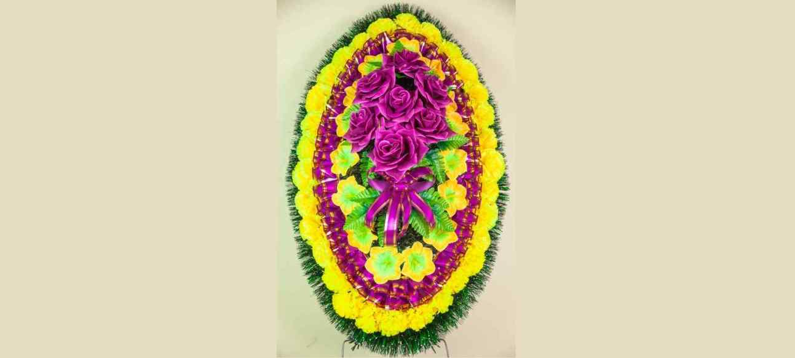
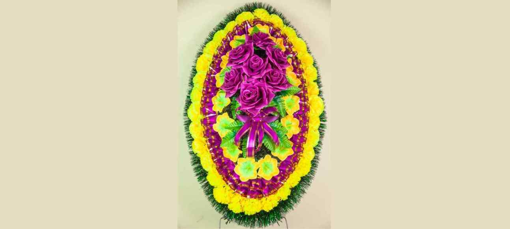
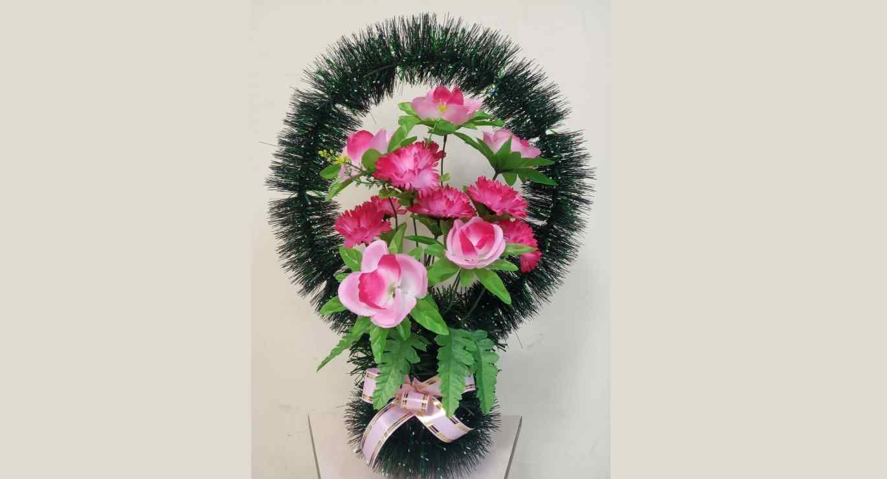
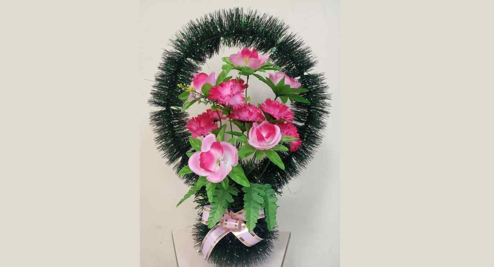
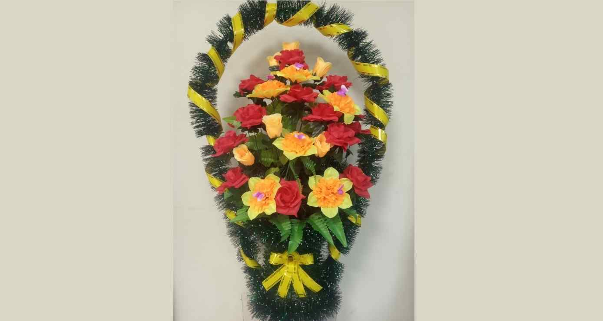
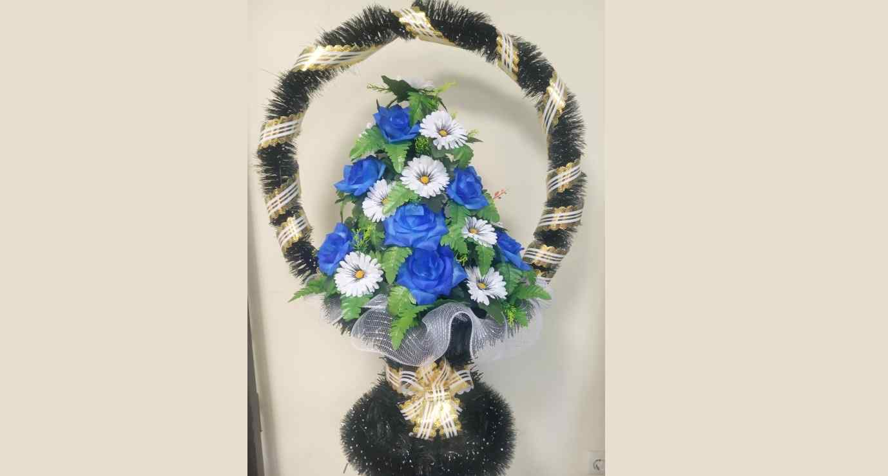
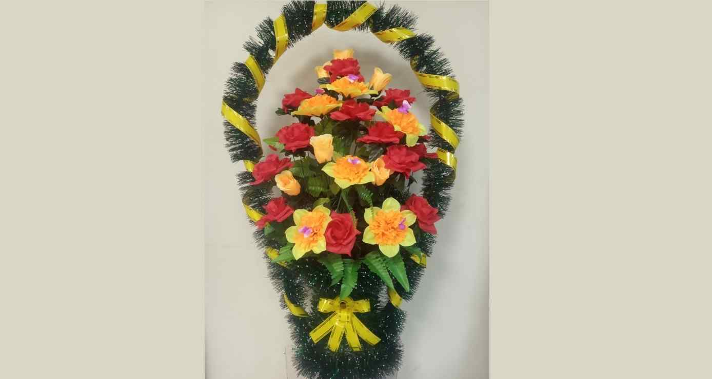
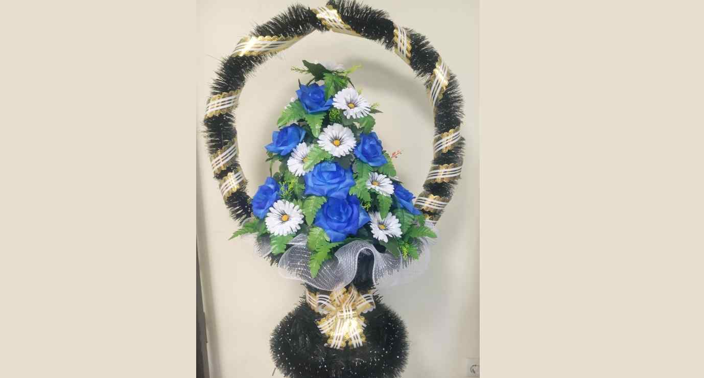

~ Венки ~
Выбор венка на похороны
Выбор венка на похороны — не самая важная часть печальной церемонии. Тем не менее отнестись к ней следует внимательно. Пренебрежение к деталям расценивается как неуважение к покойному.
Как появилась традиция
Обычай приносить цветы на похороны возник в глубокой древности. Существует несколько версий появления этой традиции. Цветы могли использоваться для того, чтобы заглушить неприятный запах от мертвого тела. Возможно, их применяли в качестве подарка покойному. Люди верили, что умерший родственник стал ближе к богам, а значит, сможет помогать живым. Из цветов делали венки и букеты, украшали ими корзины, чтобы придать подарку более торжественный вид.
Сколько венков нужно заказать
Похоронный этикет не указывает точное количество ритуальных принадлежностей, их стоимость и т.п. Каждая семья имеет право самостоятельно решить, сколько именно венков для погребения нужно заказать. Исходить следует из финансовых возможностей. Не стоит брать кредит или тратить последние сбережения на роскошные похороны, даже если покойный много значил для своих родных. Умершему человеку безразлично, в какой гроб его положат, какие цветы будут принесены на его похороны.
Нередко венки заменяют букетами цветов или корзинами. Эти ритуальные атрибуты ассоциируются с погребением значительно меньше, ведь цветы в корзинах и букетах дарят и живым людям. Если родные умершего отдали предпочтение венкам, заказывать нужно четное количество, как того требует традиция. Коллеги покойного могут приобрести общий венок. Друзья и знакомые умершего поступают аналогичным образом.
Виды похоронных венков
При выборе ритуальных принадлежностей необходимо обращать внимание на их форму. Овальные без отверстия предназначены для установки на могиле рядом с памятником или возле гроба. Круглые закрепляют на надгробии. Венки круглой формы выбирают потому, что их легче транспортировать. Существуют также гирлянды для закрепления в верхней части гроба.
Флористы в бюро ритуальных услуг принимают заказы на похоронные принадлежности нетрадиционной формы. Цветы для изготовления ритуальных атрибутов могут быть как живыми, так и искусственными. Похоронные венки из натуральных цветов стоят значительно дороже. Предпочтение им отдают потому, что использование искусственного материала считается не христианской традицией. Однако у искусственного материала есть свои преимущества. Изготовленные из него принадлежности можно заказать задолго до проведения церемонии или купить готовые в похоронном бюро. В отличие от живых цветов искусственные растения будут долго сохранять привлекательный внешний вид.

 



Размерная линейка
Венок для похорон состоит из цветов (искусственных или настоящих). Использование тех или иных растений несет особый смысл. Верба говорит о воскресении и вечной жизни. Преподнося вербу, пришедшие на траурную церемонию словно хотят сказать: смерть — это временное состояние плоти. Чтобы подчеркнуть нравственную чистоту умершего человека, используются фиалки, лилии или белые розы. Если покойный был особенно набожным, прославился служением Богу, используется кипарис. Плющ, мирт, ель или сосна — символы вечной жизни. Они указывают на неугасающую любовь, которую испытывают родные и близкие к умершему человеку.
Красный
Символизирует мученичество. Его применяют в тех случаях, когда человек умер не своей смертью— погиб в катастрофе, был убит и т.п. Красный цвет напоминает о любви тех, кто принес венок умершему человеку.
Оранжевый
Используется для того, чтобы подчеркнуть жизнерадостный характер, который отличал покойного. Оранжевый выглядит неуместно из-за своей яркости. Но яркость не стоит считать оскорблением чувств родственников или неуважением к покойному. Она как будто говорит окружающим: умерший не одобрил бы слишком мрачного настроения родных и близких.
Желтый
Цвет напоминает о том, что усопший не прекратил своего существования, а просто перешел в иной мир. Желтый символизирует яркое солнце, свет, к которому летит душа.
Белый или розовый
Эти цвета используют в тех случаях, когда хоронят детей или очень молодых людей. Белый олицетворяет чистоту и непорочность. С помощью розового можно привлечь ангелов, которые сопроводят душу усопшего в лучший мир
Голубой
Цвет напоминающий о небесной лазури, в которую поднимается душа. Наравне с розовым и белым голубой символизирует чистоту и непорочность. Но если розовый принято использовать на похоронах девочек и молодых девушек, голубые цветы можно чаще увидеть на церемонии прощания с мальчиком или юношей.
Синий
Венки синего цвета используют на похоронах взрослых женатых мужчин. Этот цвет считается символом скорби родных и близких.
Сиреневый
Говорит о благородстве усопшего. Сиреневый — символ окончания земного пути и перехода в другую жизнь.
Надпись на траурной ленте
Обычно венок не обходится без специальной ленты, на которой указано, кто именно отдает дань уважения покойному. Ленты с подписями традиционно делают из шелка. Можно купить уже готовый ритуальный атрибут с надписью или заказать ленту со своей собственной подписью.
Выбирая надпись, нужно помнить о том, что она должна быть максимально краткой и лаконичной. Предложения следует тщательно продумать. Они должны не только указывать на адресанта, но и выражать слова сочувствия. Варианты могут быть такими: «Любимому мужу, отцу и дедушке. Любим, помним, скорбим!», «От коллектива сотрудников. Вечная память!», «От друзей. Земля тебе пухом!».
Использование специальной краски, которая не смывается дождем и снегом и не выгорает на солнце, помогает сохранить надпись надолго. Цвет ленты имеет свое собственное символическое значение. Его следует учесть при подборе погребального атрибута:
Черный
Считается классическим цветом, применение которого допустимо вне зависимости от пола, возраста и рода деятельности усопшего.
Цвета флага
Если лента окрашена в цвета государственного флага, это свидетельствует о том, что покойный был военнослужащим, или он погиб в зоне боевых действий, исполняя служебный долг (например, был медицинским работником).
Белый
Используется на похоронах духовных лиц, молодых людей или детей. Цвет символизирует духовную чистоту и непорочность.
Красный/бордовый
Венки с бордовыми или красными лентами преподносят деятелям культуры и искусства или политикам.
Этикет возложения
Возложить венок на могилу, согласно похоронному этикету, необходимо в самом конце церемонии. Если предмет имеет небольшие размеры, сделать это может один человек. Для возложения крупных ритуальных принадлежностей может потребоваться 2–3 участника церемонии. После возложения допустимо зачитать вслух надпись на траурной ленте. Этикет требует постоять некоторое время возле могилы молча (достаточно 30–40 секунд), чтобы почтить память усопшего. После возложения венков прощание с умершим обычно заканчивается. Зная, как выбрать венок на похороны, родные и близкие умершего человека всегда смогут рассказать о своих чувствах к покойному с помощью формы и цветов, использованных для изготовления ритуального изделия.
 

 


